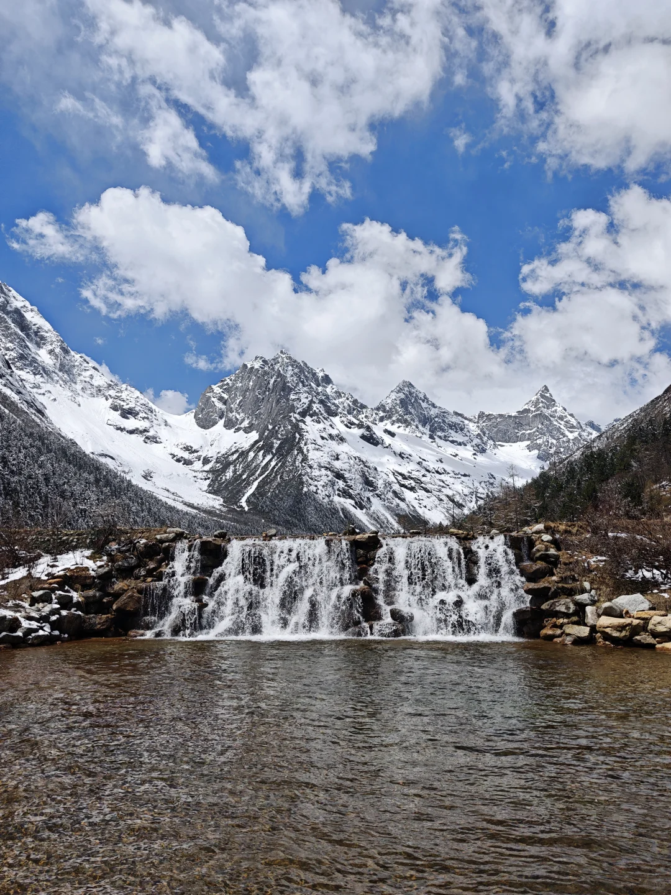
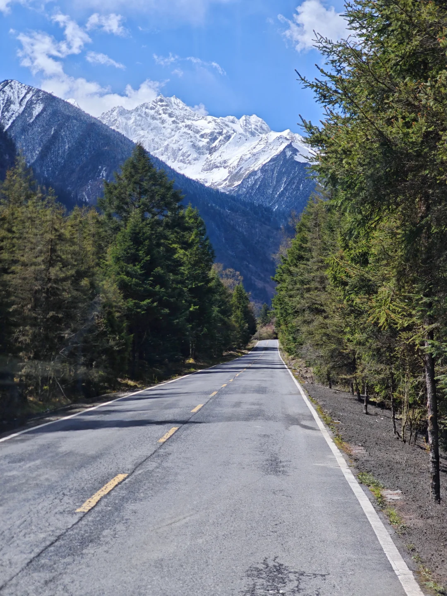
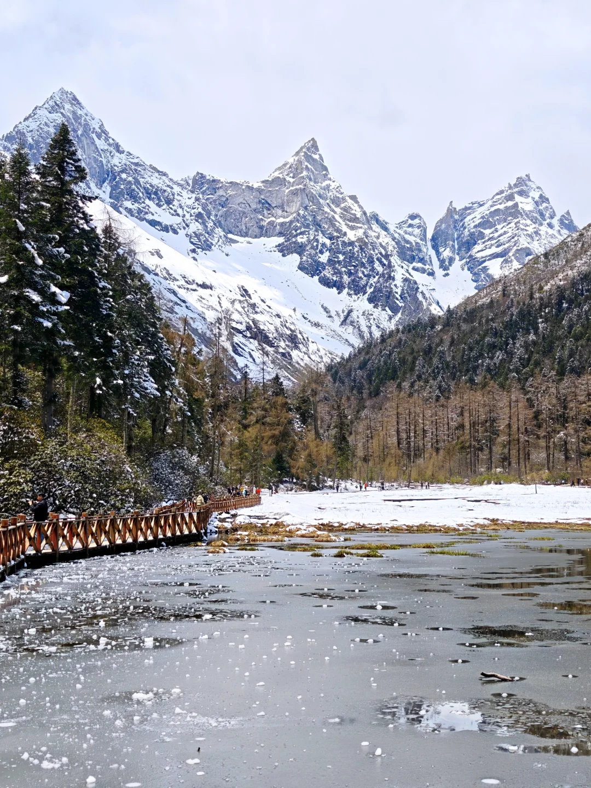

龙王海（图3–4）
进入毕棚沟遇见的第一个高山天然湖泊。水质极度清澈透亮，野鸭游弋其间。秋季四周密布红桦、冷杉与金黄落叶松，层林尽染，阳光斜射时湖水呈现纯净的孔雀蓝。
📸 小红书游览避坑： 建议早晨上山时先坐大巴直奔山顶，下午乘大巴下山途中再在龙王海站下车慢慢漫步拍照，此时光线顺光，水色最通透。

| 项目 | 费用 | 性质 | 说明与强烈建议 |
|---|---|---|---|
| 门票 + 景区大巴观光车 | 参考口径：门票 ¥70 + 大巴 ¥70 | 必须购买套票 | 大巴车从游客中心开至【上海子服务区】（车程约40分钟）。 |
| 第 1 段电瓶车 (上海子 ⇄ 磐羊湖) | 参考口径：¥30（往返） | 强烈建议买 | 游客实测徒步约需 2 小时；4-5 小时速通建议乘车。 |
| 第 2 段电瓶车 (月亮湾 ⇄ 燕子岩窝) | 参考口径：¥30（往返） | 强烈建议买 | 单程 4.5 公里直达海拔 3800m 终点雪山红石滩。 |
💡 价格口径提醒： 3 篇游客笔记出现约 ¥180 与“70+70+60≈¥200”两种口径，可能受平台套餐、活动或发布时间影响。路线判断可参考，价格务必在“阿坝旅游”等官方渠道按出行日核验。两段电瓶车全坐更省时，但高海拔不等于对老人小孩“无风险”。
📌 游客实测样本（博主 Suburb. 于 2024 年五一假期实地游玩，2026-09-19 整理）： 毕棚沟4-5小时速通攻略、 成都周末两日路线、 不累腿换乘说明。个人笔记用于补充真实动线，不替代景区当日公告。
进入毕棚沟遇见的第一个高山天然湖泊。水质极度清澈透亮，野鸭游弋其间。秋季四周密布红桦、冷杉与金黄落叶松，层林尽染，阳光斜射时湖水呈现纯净的孔雀蓝。

游览第 2 站 · 大巴沿途 (图5)图5为第二段大巴途中视角，不伪装成独立子景点；适合坐前排观景，但弯道较多、容易晕车。

毕棚沟无可争议的视觉中心。湖水呈现透彻的蓝绿色渐变，半脊峰雪山金顶完美倒映在如镜水面上。湖中挺立着原生高山枯树，木质月亮湾步道横卧湖心，环湖漫步犹如漫步在阿尔卑斯山仙境。

游览第 4 站 · 月亮湾换乘点 (图10)磐羊湖轻徒步段的换乘终点。图10单独归入月亮湾，避免继续与磐羊湖合并成一张代表图。
电瓶车能直达的终点站。拔地而起的千仞黑色花岗岩雪山绝壁扑面而来，绝壁之上悬挂着巨大的现代冰川与层层瀑布，山谷间草甸泛着灿金，十月中下旬常与初雪同框，震撼人心。
从燕子岩窝继续向上爬坡轻徒步约 30 分钟抵达的高处秘境，是景区内离雪山最近的观景区域。高山碎石、残雪与高耸雪峰极具压迫感。坡度较大且海拔接近 3900 米，高反或体力不支者建议在燕子岩窝休整返程。
已按小红书博主 Suburb. 正文完整展示全部下载完成的子景点实拍照片（拍摄于 2024 年五一假期）：图3–4＝龙王海，图5＝龙王海至上海子途中，图6–9＝磐羊湖，图10＝月亮湾，图11–13＝燕子岩窝，图14–16＝山水秘境。图片来自五一春雪期实拍，用于佐证景区子景点归属与真实动线。